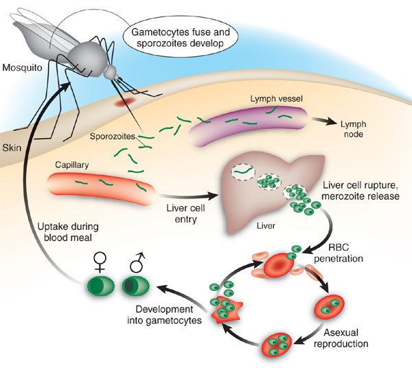
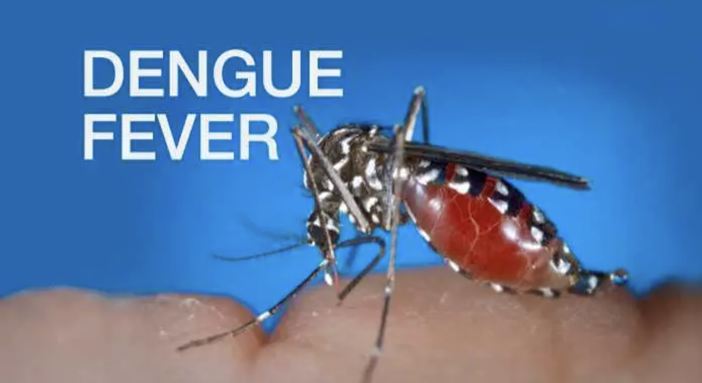

- Prevention: Malaria can be prevented by avoiding mosquito bites and with medicines. 1] Use mosquito nets when sleeping in places where malaria is present 2] Use mosquito repellents (containing DEET, IR3535 or Icaridin) after dusk 3] Use coils and vaporizers. 4] Wear protective clothing. 5] Use window screens.
- Treatment: common medicines (pills) for malaria: 1] Artemisinin-based combination therapy medicines are the most effective treatment for P. falciparum malaria. 2] Chloroquine is recommended for treatment of infection with the P. vivax parasite only in places where it is still sensitive to this medicine. 3] Primaquine should be added to the main treatment to prevent relapses of infection with the P. vivax and P. ovale parasites. Different medicines depend on the type of parasite, people’s weight and health situation.
- Vaccine: As of 2 October 2023, both the RTS,S/AS01 and R21/Matrix-M vaccines are recommended by WHO to prevent malaria in children. Malaria vaccines should be provided to children in a schedule of 4 doses from around 5 months of age. 10)Remainder: If you need any help to treat and prevent malaria, please connect local healthcare and the Against Malaria Foundation. https://www.againstmalaria.com/
Malaria
- Global situation: Globally in 2022, there were an estimated 249 million malaria cases and 608 000 malaria deaths in 85 countries.
- Cause: Plasmodium parasite The parasite is spread to humans through the bites of infected mosquitoes. During blood-sucking, malaria-infected female Anopheles mosquitoes inoculate humans with zoospores, which infect hepatocyte digits and mature into schizonts, which rupture and release schizonts that replicate and multiply in the liver.
- The danger of malaria: 1] Damage the kidneys or liver or cause the spleen to rupture, leading to life-threatening. 2] Anemia. Malaria may result in not having enough red blood cells for an adequate supply of oxygen to the body's tissues.
- High risk area: Most cases of malaria occur in sub-Saharan Africa, but it also occurs in parts of Oceania (such as Papua New Guinea) and in parts of Central and South America and Southeast Asia.
- Symptoms: Symptoms are similar to those of flu and usually appear 6 to 30 days after the mosquito bite, but it can sometimes take up to a year for symptoms to start. Fever (the most common symptom) Chills Headache. Sweats Fatigue Nausea and vomiting Body aches Generally feeling sick If you are in a malaria-prone area and have any of these symptoms, go to a clinic or hospital immediately. Healthcare providers can conduct the most appropriate diagnostic test as soon as possible if they suspect malaria.
- Test: Blood smear microscopy(Best way) Blood smear microscopy test is where a small sample of blood is taken from a patient and sent to a laboratory to be examined under a microscope.
-
6)Symptoms
People with cholera usually have mild or no symptoms at all and get better on their own. About one in ten will develop severe symptoms that can be life-threatening.
- 1] Early symptoms of cholera include： Watery diarrhea Vomiting Leg cramps Restlessness or irritability Symptoms usually appear 2-3 days after drinking or eating food containing cholera germs. Diarrhea and vomiting cause rapid loss of body fluids and can lead to dehydration. If left untreated, severe dehydration can lead to kidney failure, shock, coma and death.
- 2] Symptoms of dehydration include
Increased heart rate
Loss of skin elasticity
Dryness of mucous membranes
Low blood pressure
- 7)Test Detection of Vibrio cholerae in feces
- 8)Prevention Taking in safe drinking water, and effective food hygiene Washing hands often with soap and safe water Using toilet Cleaning up
- 9)Treatment Oral Rehydration Therapy The most important treatment for cholera is rehydration therapy to replace fluids lost through diarrhea and vomiting. Rehydration therapy can include ORS, intravenous fluids, and electrolytes. With timely rehydration therapy, more than 99% of cholera patients survive.
- 10)Vaccine Vaccination of indigenous populations and travelers
- 11)Remainder: If you have watery diarrhea 2-3 times a day, go to hospital as soon as possible for treatment
Cholera
- 1)Global situation: Since 1 January 2024 and as of 23 October 2024, 457 341 cholera cases, including 3 433 deaths, have been reported worldwide.
- 2)Cause Cholera is an acute diarrhoeal infection caused by ingestion of food or water contaminated with the bacterium Vibrio cholerae. Cholera outbreaks tend to occur during the rainy season because rain favors the growth and spread of bacteria and some other vector species, as well as cholera, making it a seasonal infection. However, climate change may trigger air pollution levels, which can increase infection rates. Of course, the dry season can also lead to people contracting cholera. This is because climate change has a direct impact on the lives of the poor, making them vulnerable and susceptible to disease because they live in unsanitary conditions and drink contaminated water.
- 3)Spread: People usually become infected with cholera by drinking water that contains traces of the feces of a cholera patient or by eating food that contains traces of the feces of a cholera patient. The disease can spread rapidly in areas where sewage and drinking water are not adequately treated. Cholera bacteria can also survive in brackish (slightly salty) and coastal waters. Eating raw shellfish can lead to cholera. Cholera does not spread from person to person or through casual contact with a person with cholera.
- 4)Danger Cholera causes severe acute watery diarrhea and dehydration, and if left untreated, death may occur within hours.
- 5)High risk area Cholera remains a significant cause of illness and death in many African countries, including Zambia, Zimbabwe, Malawi, Kenya, and Mozambique.
- 4)High risk area: poor rural areas of Central America, South America and Mexico.
- 5)Symptoms: Short term symptoms: Mild, flu-like symptoms, such as fever, fatigue, body aches, and headaches Rash Loss of appetite Diarrhea Vomiting Swelling or a sore near the eye or on the side of the face where the bite or infection occurred (visible in fewer than half of infected people) Enlarged glands Long term: Heart failure Abnormal heart rhythm Trouble eating Trouble passing stool
- 6)Test: In the acute phase of infection, healthcare providers might observe parasites circulating in the blood. They can diagnose Chagas disease by detecting these parasites in a blood smear through microscopic examination. This involves preparing and staining both thick and thin blood smears to visualize the parasites.
- 7)Prevention: If you live in a high-risk area for Chagas disease, these steps can help you prevent infection: Avoid sleeping in a mud, thatch or adobe house. These types of residences are more likely to harbor triatomine bugs. Use insecticide-soaked netting over your bed when sleeping in thatch, mud or adobe houses. Use insecticides to remove insects from your residence. Use insect repellent on exposed skin.
- 8)Treatment: Chagas disease can be treated with benznidazole or nifurtimox. Both medicines kill the parasite and are fully effective in curing the disease if given early in the acute phase, including in case of congenital transmission.
- 9)Vaccine Currently, no vaccines or medicines prevent Chagas disease.
- 10)Remainder: You can use insect repellent and try to keep your living environment as clean as possible.
Chagas
- 1)Global situation: There are approximately 6-7 million people infected with Chagas disease worldwide, with 12,000 deaths, every year.
- 2)Cause Chagas disease is caused by a parasite. It is passed through the droppings of the triatomine bug. People get Chagas disease through contact with the feces of infected triatomine bugs.
- 3)Danger: If you have Chagas disease, you have about a 30% chance of developing complications. They include: Infected heart muscle (myocarditis) Brain infection (meningoencephalitis) Enlarged heart Enlarged esophagus Enlarged colon Death
- 5)Symptoms:
1] Initial symptoms:
2] Fever
3] Chills
4] Severe headache
5] Back pain
6] General body aches
7] Nausea
8] Vomiting
9] Fatigue (feeling tired)
10] Weakness
Severe symptoms:
1] High fever
2] Yellow skin
3] Eyes (jaundice)
4] Bleeding
5] Shock
6] failure
- 6)Test: See doctor and do blood test
- 7)Prevention and vaccine: Reducing the risks of being bitten by mosquitoes Use insect repellents containing 20 – 30% DEET Wear long-sleeved clothes and long pants when outdoors/Avoid unnecessary outdoor exposure.
- 8)Treatment: There is no specific antiviral therapy to treat yellow fever. Treatment is mostly supportive. Patients with yellow fever should be hospitalized for close observation. Avoid aspirin and other nonsteroidal anti-inflammatory drugs as they may increase the risk of bleeding.
- 9)Vaccine: Yellow fever is preventable by vaccination. A single dose of yellow fever vaccine provides lifelong immunity if given at least 10 days prior to possible exposure. The vaccine is a live vaccine. Administration should be avoided in persons who are severely immunocompromised, pregnant, and used with caution at the extremes of age (infants <6 months and individuals >60 years old). Persons with severe egg protein allergy should not receive the vaccine.
- 10)Remainder: If you plan to go to yellow fever endemic regions, you need to take a yellow fever vaccine.
Yellow fever
- 1)Global situation: As of 2023, 34 countries in Africa and 13 countries in Central and South America are either endemic for, or have regions that are endemic for, yellow fever.
- 2)Cause and Spread: Yellow fever is caused by a virus carried by mosquitoes. The virus that causes yellow fever is passed to humans through the bites of infected mosquitoes. The mosquitoes that spread the infection are usually active and bite during daylight hours, and are found in both urban and rural areas. Yellow fever can’t be passed directly from person to person through close contact.
- 3)Danger: Yellow fever may cause high fever, yellow skin or eyes (jaundice), bleeding, shock, and organ failure. Among those who develop severe disease, 30-60% die.
- 4)High risk area: Afghanistan, Benin, Burkina Faso, Cameroon, Central African Republic (CAR), Chad, Republic of Congo, Democratic Republic of Congo, Côte d’Ivoire, Egypt, Ethiopia, Gambia, Guinea, Guinea Bissau, Iran (Islamic Republic of), Kenya, Liberia, Madagascar, Mali, Mauritania, Niger, Nigeria, Pakistan, Senegal, Sierra Leone, Somalia, South Sudan, Sudan, Tajikistan, Uganda, Ukraine, Yemen.
-
4)High risk area:
1]Caribbean
2]Central America
3] South America
4]Southeast Asia
5] Pacific Islands
5)Symptoms:
Duration time: 4 to 7 days
1]Sudden onset of fever for 2 to 7 days
2]Severe headache, pain behind the eyes
3]Joint and muscle pain
4] Skin rashes
5] Mild bleeding (such as nose or gum bleed, or easy bruising of the skin) - 6)Test: Blood test to assess the platelet level and concentration (as it can be normal during the first few days of fever)
-
7)Prevention:
Protect ourselves from mosquito bites.
1] Use insect repellent.
2] Wear loose-fitting, long-sleeved shirts and pants.
3] Take steps to control mosquitoes in and around home - 8)Treatment: There is no antibiotic or antiviral medication for dengue fever. The treatment is mainly supportive and for relief of symptoms.
- 9)Vaccine: Vaccination is only suitable for those aged 12 to 45 years old. It is not recommended for individuals who have no previous dengue infection as they are at an increased risk of having severe dengue, should they become infected subsequently with the dengue virus. A blood test is recommended to determine their past infection status, prior to receiving the vaccine.
- 10)Remainder: Please go to see a doctor if you have symptoms of Dengue.
Dengue
-
1)Global situation: As of 30 April 2024, over 7.6 million dengue cases have been reported to WHO in 2024, including 3.4 million confirmed cases, over 16 000 severe cases, and over 3000 deaths. While a substantial increase in dengue cases has been reported globally in the last five years, this increase has been particularly pronounced in the Region of the Americas, where the number of cases has already exceeded seven million by the end of April 2024, surpassing the annual high of 4.6 million cases in 2023. - 2)Cause: Dengue fever is caused by any one of four types of dengue viruses. Dengue fever is spread through mosquito bites. When a mosquito bites a person infected with a dengue virus, the virus enters the mosquito. Then, when the infected mosquito bites another person, the virus enters that person's bloodstream and causes an infection. Dengue will not be passed person by person directly. After we've recovered from dengue fever, we have long-term immunity to the type of virus that infected you — but not to the other three dengue fever virus types. We may be infected again in the future by one of the other three virus types. Our risk of developing severe dengue fever increases if we get dengue fever another time.
- 3)Danger: First-time dengue infections can be severe, especially among the elderly and those with pre-existing medical conditions and repeat dengue infections have been associated with a higher occurrence of severe dengue. In rare cases, dengue fever may progress to dengue haemorrhagic fever or dengue shock syndrome. These are severe forms of the infection that can result in death. Symptoms of severe dengue may include: Bleeding (e.g. gum or nose bleed, black stool, blood in vomit or stool) Persistent vomiting Abdominal pain or tenderness Restlessness or lethargy Warning signs usually begin 1 to 2 days after your fever has subsided. 
- 5)Symptoms: Symptoms tend to happen within 1 to 4 weeks of infection. At first: fever, skin lesions, rash, swelling, or swollen lymph nodes on the back of the neck. After many weeks, the infection may become meningoencephalitis. This is an infection of the brain and the fluid surrounding the brain and spinal cord.
- 6)Test: CATT (Card-Agglutination Trypanosomiasis Test)
- 7)Prevention and vaccine:
Protect ourselves from mosquito bites.
1] Use insect repellent.
2] Wear loose-fitting, long-sleeved shirts and pants.
3] Take steps to control mosquitoes in and around home
- 8)Treatment: There is no antibiotic or antiviral medication for dengue fever. The treatment is mainly supportive and for relief of symptoms.
- 9)Vaccine: Vaccination is only suitable for those aged 12 to 45 years old. It is not recommended for individuals who have no previous dengue infection as they are at an increased risk of having severe dengue, should they become infected subsequently with the dengue virus. A blood test is recommended to determine their past infection status, prior to receiving the vaccine.
- 10)Remainder: Please go to see a doctor if you have symptoms of Dengue.
African trypanosomiasis( sleeping sickness)
- 1)Global situation: In 2023, WHO received 699 reports of sleeping sickness cases from African countries.
- 2)Cause: African trypanosomiasis is caused by protozoans of the genus Trypanosoma, transmitted to humans by bites of tsetse flies (glossina) which have acquired the parasites from infected humans or animals.
- 3)Danger: If left untreated, death will occur within several weeks to months.
- 4)High risk area: Angola, Central African Republic, Chad, Congo, Democratic Republic of Congo, Malawi, Tanzania, Sudan, Uganda, Zambia
- 6)Test A chest X-ray which can show whether tuberculosis has damaged the lungs A tuberculin skin test (Mantoux test) which shows if a person is likely to be infected with tuberculosis A sputum test for smear and culture of tuberculosis germs
-
7)Prevention:
As tuberculosis is an airborne infection, tuberculosis bacteria are released into the air when someone with infectious tuberculosis coughs or sneezes. The risk of infection can be reduced by using a few simple precautions:
1] Good ventilation: as tuberculosis can remain suspended in the air for several hours with no ventilation
2] UV light kills off tuberculosis bacteria
good hygiene: covering the mouth and nose when coughing or sneezing reduces the spread of tuberculosis bacteria. In healthcare settings, the spread of tuberculosis is reduced through the use of protective masks, ventilation systems, keeping potentially infectious patients separate from other patients, and the regular screening of healthcare workers for tuberculosis. - 8)Treatment: 6 to 9 months Taking tablets The TB patient takes each dose of medication under the direct observation of a health care worker to ensure that the correct dosage and combination of TB medications are taken for the entire course of the treatment. The TB patients’ response and adherence to treatment are closely monitored so that treatment failure, emergence of drug resistance and spread of the disease can be avoided.
- 9)Vaccine: BCG (Bacillus Calmette-Guérin) vaccine This vaccine is only recommended for people at higher risk of getting tuberculosis, such as some babies and children, some travellers and people at risk through their work.
- 10)Remainder: Please go to see a doctor if you have symptoms of Tuberculosis, and be isolated with other people.
Tuberculosis
- 1)Global situation: In the past decade, an average of 2.5 to 3.2 million cases were notified every year globally, the small decrease in notification rates in recent years being offset by population growth.
-
2)Cause:
Tuberculosis (TB) is caused by a bacterium (or germ) called Mycobacterium tuberculosis. When a person breathes in TB germs, the germs can settle in the lungs and begin to grow. From there, they can move through the blood to other parts of the body, such as the kidney, spine, and brain.
- 3)Danger: TB most often affects your lungs, but can also affect other organs like your brain.
- 4)High risk area: Close contacts of persons exposed to contagious cases of TB. Cambodia, the Russian Federation and Zimbabwe, Gabon, Mongolia and Uganda
- 5)Symptoms:
1] A cough that lasts more than 3 weeks – may cough up mucus (phlegm) or mucus with blood in it
2] Feeling tired or exhausted
3] High temperature or night sweats
4] Loss of appetite
5] Weight loss
6] Feeling generally unwell
If tuberculosis has spread to another part of body such as glands, bones or brain, we may have other symptoms, including:
1] Swollen glands
2] Body aches and pains
3] Swollen joints or ankles
4] Tummy or pelvic pain
5] Constipation
6] Dark or cloudy pee
7] Headache
8] Being sick
9] Feeling confused
10] Stiff neck
11] Rash on the legs, face or other part of the body
by Wei Siyu